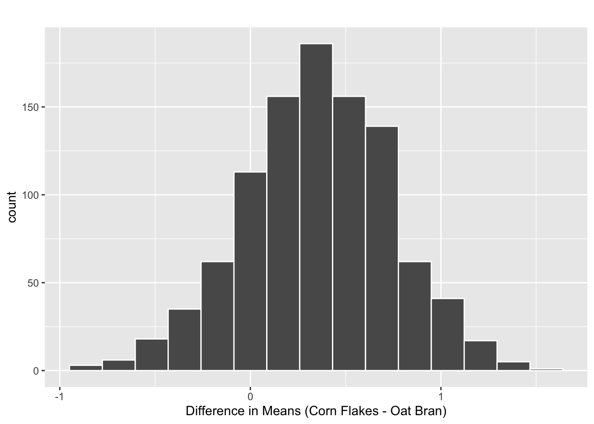

Activity 6A: Cholesterol II
Confidence Intervals for Two Independent Means
Learning outcomes
Part 1: Confidence Interval for Two Independent Means
Use bootstrapping to find a confidence interval for a difference in means.
Interpret a confidence interval for a difference in means.
Use a confidence interval to determine the conclusion of a hypothesis test.
Review from last week
Researchers investigated whether eating corn flakes compared to oat bran had an effect on serum cholesterol levels. Twenty-eight (28) individuals were randomly assigned a diet that included either corn flakes (14 individuals) or oat bran (14 individuals). After two weeks, cholesterol levels (mmol/L) of the participant were recorded.
Last week we used cards to simulate what differences in mean cholesterol levels we might have seen if the null hypothesis was true. However, today we’re not interested in deciding if we believe the means of these two groups are similar or different.
Today, we are interested in estimating what range of values the true difference in means might take on.
Reminder - Output from t_test()
| statistic | t_df | p_value | alternative | estimate |
|---|---|---|---|---|
| 0.947 | 25.805 | 0.352 | two.sided | 0.363 |
- Based on the p-value you obtained from Activity 5: Cholesterol I, do you believe 0 is a plausible value for \(\mu_{\text{CORNFLK}} - \mu_{\text{OATBRAN}}\)?
Confidence interval
A confidence interval represents a range of plausible values for a population parameter. In this case, our population parameter is \(\mu_{\text{CORNFLK}} - \mu_{\text{OATBRAN}}\), or the true difference in mean cholesterol levels between corn flake and oat bran diets.
The best way to estimate what range of values a parameter might have is to go out and collect more samples. However, that is often not feasible. So, instead we mimic this process by resampling with replacement from our original sample. This process is called bootstrapping.
Bootstrapping cholesterol & diets
When bootstrapping with two groups, we’re assuming that the sample within each group is representative of other possible values in the population. Here, we are assuming that the participants included in our sample are representative of the cholesterol of all other individuals.
Because we are not assuming the null is true (that there is no difference in the means of these two groups), we do not combine the groups together. Rather, we keep the groups separate and sample from each group separately.
- Let’s walk through how we would carry out this process:
Step 1:
Step 2:
Step 3:
Step 4:
- What statistic do we have after step 4?
- Once we create a bootstrap distribution of 1000 simulations, at what value do you expect the distribution to be centered? Explain your reasoning.
Creating a bootstrap distribution in R
We will use the infer package (again) to make our bootstrap distribution. The process we used for this situation will look very similar to before, since all we are changing is the statistic we calculate!
- Fill in the blanks for the code below.
cholesterol_data_long %>%
specify(response = __________________, explanatory = _______________) %>%
generate(reps = _______________, type = _______________) %>%
calculate(stat = "diff in means",
order = c("CORNFLK", "OATBRAN"))- What is the difference between this code and the code to generate a null distribution (what we did in Activity 5: Cholesterol I)?
Obtaining a confidence interval
A bootstrap distribution from 1000 reps is plotted below.

- Where is this distribution centered? Why does this make sense? How does it compare to our Null Distribution from the previous activity?
- What are the two ways we could use this distribution to obtain a confidence interval?
Percentile method
I’ve provided a table of different percentiles to help you create your confidence interval.
| Quantile | Value |
|---|---|
| 0.5% | -0.703 |
| 1% | -0.572 |
| 2.5% | -0.446 |
| 5% | -0.298 |
| 10% | -0.138 |
| 90% | 0.824 |
| 95% | 0.992 |
| 97.5% | 1.097 |
| 99% | 1.215 |
| 99.5% | 1.307 |
- Suppose we are interested in constructing a 95% confidence interval. Using the table above, report the end points of this confidence interval.
- Interpret the confidence interval in the context of this investigation.
SE method
A percentile confidence interval uses only the bootstrap distribution. The SE method on the other hand uses information from both the bootstrap distribution and the \(t\)-distribution.
Because this method uses a \(t\)-distribution it should only be used if the bootstrap distribution is bell-shaped and symmetric.
- Do you believe this condition is violated?
Alright, let’s see how this confidence interval works. Our formula looks like this:
\[(\bar{x}_{\text{CORNFLK}} - \bar{x}_{\text{OATBRAN}}) \pm t^*_{df} \times SE_{boot}\]
There are three pieces to the interval:
- the observed statistic (\(\bar{x}_{\text{CORNFLK}} - \bar{x}_{\text{OATBRAN}}\))
- the \(t\)-distribution multiplier (\(t^*_{df}\))
- the standard error from the bootstrap distribution (\(SE_{boot}\))
- What is the observed statistic (aka point estimate) for this investigation?
- Using the table below, what is the standard deviation for the bootstrap distribution (aka the estimated standard error for the difference in mean cholesterol levels)?
favstats(~stat, data = bootstrap_dist) min Q1 median Q3 max mean sd n
-0.8588718 0.103817 0.3650861 0.618274 1.557857 0.3538702 0.3847116 1000
missing
0- Using the table below, circle the correct multiplier we should use to make our interval.
R code |
Value |
|---|---|
qt(0.90, df = 12) |
1.3562173 |
qt(0.90, df = 13) |
1.3501713 |
qt(0.90, df = 26) |
1.3149719 |
qt(0.95, df = 12) |
1.7822876 |
qt(0.95, df = 13) |
1.7709334 |
qt(0.95, df = 26) |
1.7056179 |
qt(0.975, df = 12) |
2.1788128 |
qt(0.975, df = 13) |
2.1603687 |
qt(0.975, df = 26) |
2.0555294 |
qt(0.995, df = 12) |
3.0545396 |
qt(0.995, df = 13) |
3.0122758 |
qt(0.995, df = 26) |
2.7787145 |
- Using your answers to questions 12, 13, and 14, create a 95% confidence interval for the difference in mean cholesterol levels between the corn flake and oat bran diet.
- What value do check to see if this interval contains? Does our interval contain this value?
Using the \(t\)-distribution to create a confidence interval
So far we’ve found a confidence interval using the percentile and SE methods. Both of these used some aspect of the bootstrap distribution. One final option is to use the \(t\)-distribution only to create our confidence interval.
- What distribution does a bootstrap distribution approximate?
- If we wanted to use a \(t\)-distribution to approximate this distribution, what conditions do we need to check?
When we use theory-based methods to obtain our confidence interval, we use formulas to approximate the true standard error of the sampling distribution. So, where we used the standard deviation of the bootstrap distribution, now we will use a mathematical formula.
The formula for calculating the standard error of \(\bar{x}_{\text{CORNFLK}} - \bar{x}_{\text{OATBRAN}}\) is:
\[ SE = \sqrt{\frac{s_{\text{CORNFLK}}^2}{n_{\text{OATBRAN}}}{} + \frac{s_{\text{OATBRAN}}^2}{n_{\text{OATBRAN}}}} \]
favstats(Cholesterol ~ Diet, data = cholesterol_data_long) Diet min Q1 median Q3 max mean sd n missing
1 CORNFLK 2.25 3.9125 4.44 4.9100 6.42 4.443571 0.9688344 14 0
2 OATBRAN 1.84 3.6900 3.84 4.7025 5.85 4.080714 1.0569802 14 0- Using the formula and the summary statistics above, calculate the estimated standard error of the sampling distribution. Hint: \(s\) is the standard deviation!
Now that we have the standard error, we can put all of the pieces of the confidence interval together! The “formula” for a \(t\)-based confidence interval is:
\[\overline{x}_{\text{CORNFLK}} - \overline{x}_{\text{OATBRAN}}\pm t^*_{df} \times SE\]
- Using the multiplier you found in #14, calculate a 95% confidence interval for \(\mu_{\text{CORNFLK}} - \mu_{\text{OATBRAN}}\).
Take-home messages
To create one simulated sample on the bootstrap distribution for a difference in sample means, label \(n_1 + n_2\) cards with the original response values. Keep groups separate and randomly draw with replacement \(n_1\) times from group 1 and \(n_2\) times from group 2. Calculate and plot the resampled difference in means.
When using a bootstrap distribution to obtain a confidence interval, there are two methods you can use: the percentile method and the SE method.
The SE method for creating confidence intervals requires the bootstrap distribution be bell-shaped and symmetric.
The percentile method makes no assumptions about the shape of the bootstrap distribution.
You can choose between simulation-based methods (e.g., bootstrapping) and theory-based methods (e.g., \(t\)-distribution) to create a confidence interval.
Simulation-based conditions only require that the observations are independent.
Theory-based methods require that the observations are independent and that the distribution of each group is nearly normal.
If the conditions for theory-based methods are not violated, then both methods (theory & simulation) will yield similar results.
If the conditions for theory-based methods are violated, then the methods will not yield similar results.
If the conditions for theory-based methods are violated, using a \(t\)-distribution to find a p-value will underestimate the true p-value. A \(t\)-distribution will also result in a confidence interval that is too narrow!